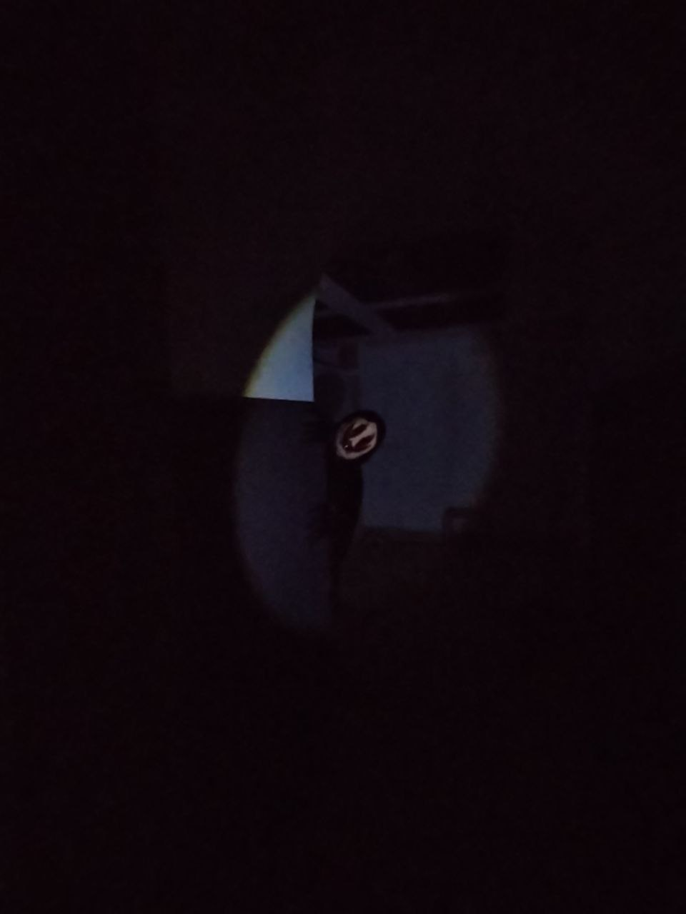

В середине XIX века на окраине городка стояла усадьба Беатрис Флаумер. Одни считали её целительницей, другие — ведьмой. Когда в округе начали умирать дети, народ обвинил Беатрис в колдовстве. Женщину сожгли на заднем дворе её дома. Перед смертью она прокляла место и тех, кто её осудил: «Пока стоит оно — будет жить моя месть». В 1930‑х годах на руинах усадьбы построили детскую больницу. Строители жаловались на странные звуки по ночам, но руководство не придало этому значения. Больницу открыли в 1937 году — всё шло хорошо. Однако в 1948 году дети стали рассказывать, что по ночам в коридорах появляется силуэт женщины в длинном платье. Наутро у некоторых находили странные отметины на коже — ожоги в форме пальцев. Персонал не верил пациентам, пока медсестры тоже не начали замечать тень, скользящую по коридорам. Чтобы замять скандал, больницу перепрофилировали в детскую психиатрическую клинику. Сюда свозили сирот, «трудных» подростков и детей, от которых отказались родители. Атмосфера в здании становилась всё более гнетущей. В 1965 году пропала 8‑летняя девочка. За следующие 5 лет исчезли более 20 детей и сотрудников. В здании находили жуткие следы: куклы с выколотыми глазами, расставленные в круг, детские игрушки, сложенные в виде лабиринта в подвале. Больницу экстренно закрыли в 1969 году. Здание решили не обносить забором и не пугать проходящих мимо людей. Уровень земли подняли, и больница с частью усадьбы оказались под центром города. Со временем про больницу забыли, однако в этих темных подземных коридорах до сих пор бродят неупокоенные души детей, работников и Беатрис. Но ведь это должно когда нибудь закончиться! Ваша группа — сталкеры, которые которые нашли в старых архивах историю о больнице, и, решив что это миф, отправились развеять его. Но ожидание часто не совпадает с реальностью, и ваше решение оказалось страшной ошибкой.
участникам младше 16 лет требуется расписка от родителей
Каблуки и высокая платформа запрещены!
Не рекомендуется людям с клаустрофобией
За испачканную одежду организатор ответственности не несет!
Квест расчитан на 75 минут, но вы можете пройти его быстрее, все зависит от вашей скорости.
Да, только об этом надо сообщить администратору не позднее, чем за 2 дня до проведения квеста.
От 2 до 7 игроков.
Нажмите кнопку «Забронировать» выше и вы перейдёте в Telegram‑бота. Далее следуйте инструкции в боте.
Минимальный возраст участников — 14 лет, участники младше не допускаются даже в присутствии совершеннолетних.
Мы не призываем вас ходить по заброшенным зданиям! Квесты проводятся исключительно в ПРОВЕРЕННЫХ и СОГЛАСОВАННЫХ местах! Мы заботимся о вашей безопасности!